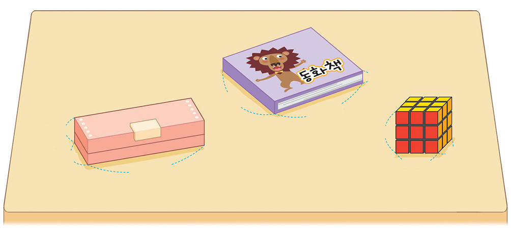
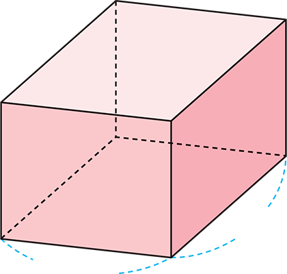
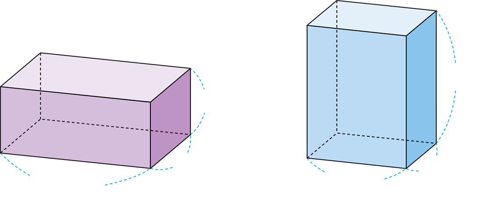
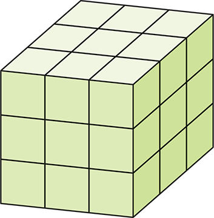

- 1
- 2
- 3
- 4
- 5
- 6
- 7
- 8
- 9
- 10
- 11
-
1 그림을 보고 안에 알맞게 써넣으세요.
 1 cm1 cm1 cm한 모서리의 길이가 1 cm인 정육면체의 부피를(이)라 쓰고,1 cm3
1 cm1 cm1 cm한 모서리의 길이가 1 cm인 정육면체의 부피를(이)라 쓰고,1 cm3
(이)라고 읽습니다.1 세제곱센티미터 -
2 부피가 1 cm3인 쌓기나무로 다음과 같이 직육면체를 만들었습니다. 오른쪽 직육면체의 부피가 왼쪽 직육면체의 부피보다 얼마나 더 큰지 구해 보세요.
 cm38
cm38 -
3 부피가 1 cm3인 쌓기나무를 다음과 같이 쌓았습니다. 쌓기나무의 수를 곱셈식으로 나타내고 직육면체의 부피를 구해 보세요.
 가나다
가나다직육면체 가 나 다 쌓기나무의 수(개) ×4×33×2×23×4×32부피(cm3) 361224 -
4 직육면체와 정육면체의 부피를 구하는 식을 써 보세요.
-
(직육면체의 부피)＝()×(가로)×(세로)높이
-
(정육면체의 부피)
＝()×(한 모서리의 길이)한 모서리의 길이
×()한 모서리의 길이
-
-
5 슬기는 가로가 5 cm, 세로가 4 cm, 높이가 2 cm인 직육면체 모양의 지우개를 샀습니다. 슬기가 산 지우개의 부피는 몇 cm3인가요?
- 식
-
5×4×2＝40
- 답
-
cm340
-
6 책상에 직육면체 모양의 물건들이 있습니다. 부피가 가장 큰 물건을 찾아 기호를 써 보세요.
㉠4 cm5 cm19 cm㉡2 cm12 cm15 cm㉢7 cm7 cm7 cm㉠ -
7 직육면체의 부피는 280 cm3입니다. 이 직육면체의 높이를 구해 보세요.
7 cm8 cmcm5 -
8 두 직육면체는 부피가 같습니다. 안에 알맞은 수를 써넣으세요.
cm94 cm4 cm6 cm3 cm8 cm -
9 작은 정육면체 여러 개를 다음과 같이 쌓았습니다. 쌓은 정육면체의 부피가 216 cm3일 때 작은 정육면체의 한 모서리의 길이는 몇 cm인가요?
cm2 -
10 직육면체 모양의 카스텔라를 잘라서 정육면체 모양으로 만들려고 합니다. 만들 수 있는 가장 큰 정육면체 모양의 부피는 몇 cm3인지 풀이 과정을 쓰고 답을 구해 보세요.
-
11 부피가 72 cm3인 직육면체가 있습니다. 이 직육면체의 가로, 세로, 높이를 정해 표를 완성해 보세요. (각 모서리의 길이는 자연수입니다.)
예가로(cm) 세로(cm) 높이(cm) 부피(cm3) 1 1 72 72 2 4 9 72 33872 43672